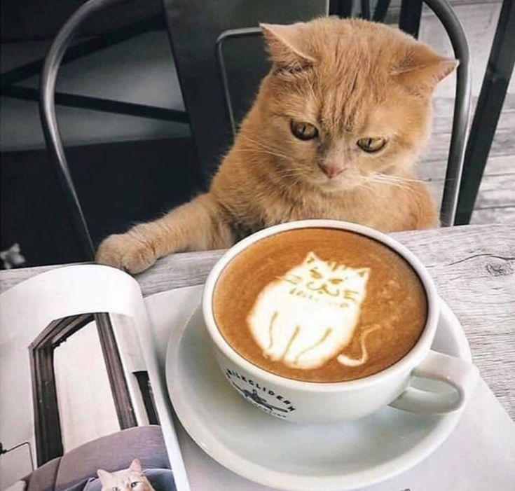

領養須知 Adoption Information
為了浪浪，在遇見你之後，可以不用獨自在漫長的道路上迷惘。
生活中有一些動物的陪伴，是一件幸福且美好的是。
歡迎來到這裡，尋找生命中的祂
欲認養流浪動物的朋友們，請遵守以下規定：
- 請詳細閱讀以下認養須知：
- 1. 須年滿20歲，並取得家人同意
- 2. 需配合結紮及植入晶片
- 3. 需簽認養切結書並同意後續追蹤
- 4. 不得24小時關籠或綁繩
- 5. 每年需施打預防針並於每月頭心絲蟲藥與除蚤
- 6. 若是在外租屋者，須取得房東同意
- 7. 需要充分瞭解如何飼養及照顧
- 若有意願認養，可先告訴店家/送養人以下資訊：
- 1. 是否有養寵物經驗
- 2. 生活環境
- 3. 理想飼養方式
- 領養貓貓程序6步驟：
- 1. 跟浪浪第一次接觸互動。
- 2. 現場辦理認養手續，或線上申請預約領養。
- 3. 新飼主證件核對及條件評估。
- 4. 動物健康檢查後，免費植入晶片、寵物登記及施打疫苗。
- 5. 接收領養諮詢與協助等服務。
- 6. 完成認領養手續，帶毛孩回新家。
